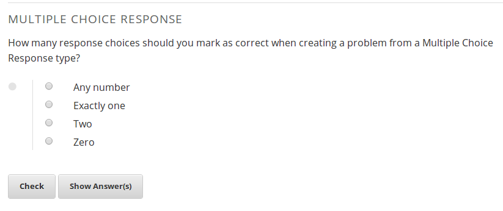
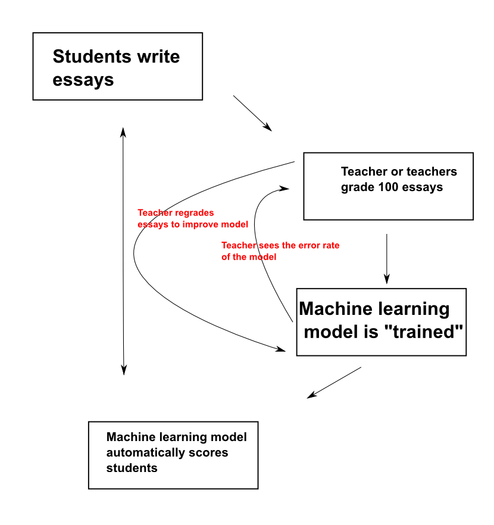
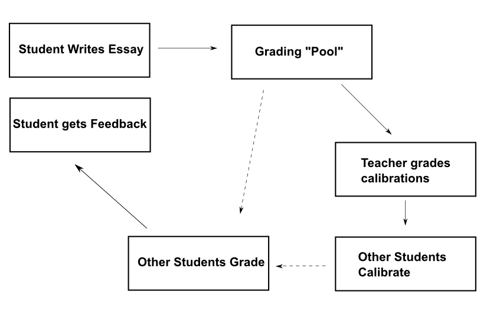
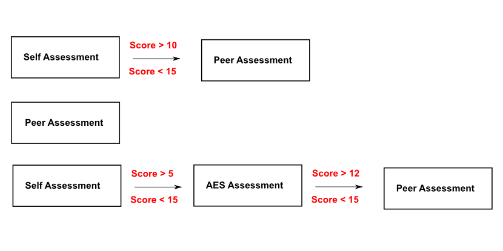

New Methods to Grade Student Essay and Short-Answer Responses
Vik Paruchuri
Equirio
Before we start
- Follow along at vikparuchuri.github.io/educause
Who am I?
- Founder at Equirio
- vik@equirio.com
What have I done?
- Machine Learning
- edX
Goals
- Discuss new methods of assessing student essays and short answers.
- Identify how each method works.
- Discuss strengths and advantages of each.
What is edX?
- edX (edx.org) is an educational non-profit created in May 2012.
- Two major components:
- edX platform learning management system (LMS)
- edX studio content management system (CMS)
- Together, enable authoring and delivery of courses at extremely large scale.
- Have hosted 30+ courses in subject areas from physics to justice, with a larger number upcoming.
- Recenly passed the 1 million student mark.
- Platform and all software today open source and coded in Python.
Assessments on the edX platform
- When edX launched, assessments were restricted to "closed-choice" response.
- 

How do we support humanities courses?
Challenges
- Need support for free-text responses.
- Richer assessments allow for varied instructional and learning styles.
- Short answer responses also useful for STEM courses.
Ideas
- Automated essay scoring (AES)
- Peer assessment
- Self assessment
- A way to use them together
Technique 1: AES
- Idea advanced by Ellis Page starting in 1966.
- Gained a lot of steam in the 1990s and 2000s.
- Currently offered by Educational Testing Service, Pearson, and CTB/McGraw-Hill, among others.
- Often used as a "second reader" for high stakes tests.
How does it work?

What does the machine model look at?
Machines can't directly understand text
- Need to convert the text into numbers, which machines can work with.
Features
- All objects can have features.
- Features can all be quantified.
- Example: your apartment, how many bedrooms it has, and how much rent you pay.
- By figuring out what patterns of features mean, we can make predictions.
Example
Survey asks why do you want to learn about machine learning?, and how interested are you on a 0-2 scale?:
| number | response | score |
|---|---|---|
| 1 | I like solving interesting problems. | 2 |
| 2 | What is machine learning? | 0 |
| 3 | I'm not sure. | 0 |
| 4 | Machine learning predicts everything! | 2 |
What if we get a survey where the response is I really like solving problems. Machine learning is very useful , but it is missing a score?
Potential features
- Presence/absence of the phrase
solving problems. (0 if absent, 1 if present) - Number of sentences.
- Presence/absence of
machine learning. - Average word length.
- Presence/absence of
machine.
Making predictions
- Use a machine learning algorithm, such as a random forest, or a linear regression.
- Give it features and human scores in order to train it.
- Training creates a model, which can predict the scores for new essays.
- To predict, take a new essay, turn it into a sequence of features, and then ask our model to score it for us.
What is the model doing?
- Trying to mimic an expert human scorer.
- Figuring out the criteria a teacher uses to score an essay.
- Applying that knowledge to scoring future essays.
- Model can be updated over time with new human scoring.
Applying AES

Sample Rubric
Topicality
0 points - Student is off topic
1 point - Student stays on topic
Photosynthesis
0 points - Incorrectly defines photosynthesis
1 points - Partially correct definition
2 points - Fully correct definition
- Rubric can be customized by the instructor.
- Score on each rubric dimension shown to students.
edX AES Flow

Low "confidence" re-grading
- edX allows teachers to regrade essays that AES has scored poorly.
- Machine models gives you a score and a confidence value from 0% - 100% associated with that score.
- Low confidence papers are shown to the teacher to re-score.
- Called active learning.
AES Overview
Strengths
- Can give very quick scores to students.
- Allows students to submit drafts and iterate on their work.
- Can save teacher effort.
Weaknesses
- Can't give thoughtful, directed, feedback.
- Potential to be "gamed."
- Needs a lot of upfront grading to be done by the teacher.
AES Best Practices
- Use in conjunction with another type of grading (more on this later).
- Construct good rubrics.
- Ensure that grading is done consistently.
- Re-grade papers as needed.
Technique 2: Peer Assessment
- Students submit papers.
- Teacher grades "calibration" essays.
- Students perform calibration.
- Each student receives grades, rubric scores, and written feedback from 3 others.
- Scores shown to student.
Peer Assessment Diagram

Peer Assessment Overview
Strengths
- Students get a lot of direct feedback.
- Students learn from grading each other.
Weaknesses
- Teacher has to grade calibration papers.
- Can be imbalances in number of graders and number of papers.
- Inconsistent quality of grading.
Peer Assessment Best Practices
- Use calibration.
- Match students based on quality of feedback.
- Incentivize peer grading.
- Manage the process and communicate with students.
Technique 3: Self Assessment
- Students submit papers.
- Students rate themselves on a rubric.
Self Assessment Overview
Strengths
- No effort to setup on the part of course staff.
- Students get instant feedback.
- Unlimited retries.
Weaknesses
- Score may be unreliable.
- Students don't get feedback.
Self Assessment Best Practices
- Use in conjunction with another type of grading.
- Give students a way to share with each other.
Pulling it all together
Chaining
- Combine by allowing teachers to setup "chains."
- Student gets one type of grading, and moves to next depending on score.
- Saves effort, maximizes feedback.
- Use same rubric for all grading types.
Chaining Diagram

Future Ideas
- AES is used as a way to give students iterative feedback before submitting a final draft to a teacher for a full evaluation.
- AES systems experiment with giving teachers information, and allowing them to regrade and customize grading.
- Automatically route students to peer graders based on performance.
- Incentivize students to self assess accurately.
- Automated systems pre-score essays, and identify students who might need teacher intervention.
- Small group discussions are tried in combination with various grading techniques.
- Automated scoring of alternative types of media, like videos.
What am I working on now?
A free and open source student-centric learning platform that enables teachers and students to collaborate. At www.movide.com .
An Android application to track, visualize, and discover what makes us happy. In alpha on the Google play store.